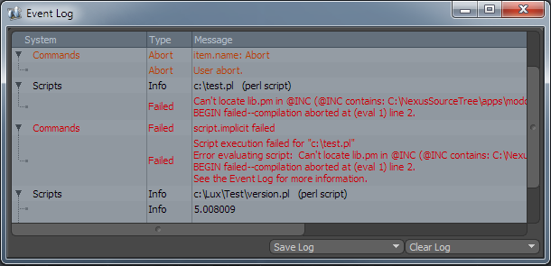

Event Log Viewport¶
The ./ is used for various status messages and error reporting. Since the results of scripting output functions (like ‘’lxout()’’) are also shown here, it can be a valuable script debugging tool. It can be accessed from the Advanced submenu of the System menu.
The Event Log shows aborts and warning messages in <span style=”color:orange”>orange</span>, failures and errors in <span style=”color:red”>red</span>, and successes and other info messages in ‘’’black’’’. The name of the sub-system the message belongs to, the type of message, and the message itself are displayed in the three columns of the view.
The log can be filtered to show the output of only a single sub-system via its Viewport Options (accessible from the Event Log window via the micro-widget in the top-right corner), or can be set to the show the master list of all sub-systems (which is the default). Specific sub-systems or the entire log can be saved to disk as a text file or cleared out.
More Information¶
modo Documentation for the {{Link to modo docs|pages/modointerface/viewports/EventLog.html|Event Log Viewport}}